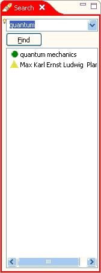

Entering Ctrl+F or clicking the
search button
will display the Search view.

The Search view allows full text search of all existing items.
For searching, you can create search queries using the boolean
operators AND, OR
and NOT. The search results are displayed in
a selection list, meaning that you can apply the same operations on
them as in the item
selection lists (e.g. display in the Relations browser,
drag'n drop, but not item deletion).
Your search queries are remembered for that you can recall them. The search field contains a history in the field's pull down menu. Click the arrow button to display this history and select the query you want to recall.
If you have selected e.g. a word in the Inspector view and
enter Ctrl+F, this selection
is copied to the search field. This allows rapid context creation:
Create an item and fill in the item
information. Then review the item's content in the Inspector view,
select a meaningful term and enter Ctrl+F.
Select the suitable items in the search result and drop them on the
item in the Relations browser.
Then go to the next meaningful term in the Inspector view and iterate
the same process.